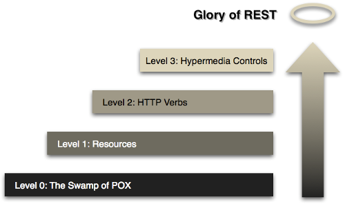

Apigility
Agile APIs
Matthew Weier O'Phinney
@mwop
21 October 2015
API
Application Programming Interface
How software should interact.
Web API
APIs delivered over HyperText Transfer Protocol (HTTP)
REST
REpresentational State Transfer
An architecture designed around the HTTP specification.
RESTful APIs
REST leverages HTTP's strengths, and builds on:
- URIs as unique identifiers for resources
- Rich set of HTTP verbs for operations on resources
- Specifying the representation format for payloads
- Linking between resources (hypermedia controls)
HATEOAS
Hypermedia As The Engine Of Application State
Glory of REST
The Richardson Maturity Model:

REST: Level 0
- The usage of HTTP as communication layer
- A single format for data representation (e.g. JSON)
- Basically a Remote Procedure Call (RPC)
REST: Level 1
- URIs as unique identifiers for resources; e.g.
the resource User might be identified as:
http://domain/api/user[/:user_id]
where user_id is an optional parameter.
REST: Level 2
- Usage of HTTP verbs for operations on resources:
- POST => create a new entity
- GET => retrieve a collection or entity
- PATCH => update an entity
- etc.
REST: Level 3
Linking between resources to indicate relationships (hypermedia controls)
GET /api/user/mwop
{
"_links": {
"self": {
"href": "http://domain/api/user/mwop"
},
"contacts": [
{ "href": "http://domain/api/user/andi" },
{ "href": "http://domain/api/user/zeevs" }
]
},
"id": "mwop",
"name": "Matthew Weier O'Phinney"
}
JSON-HAL format
Advantages of REST
- Scalable architecture
- Ease of consumption
- Reduced client/server coupling
- Discoverability
REST in PHP
header('Content-Type: application/json');
echo json_encode([
'id' => 'mwop',
'name' => 'Matthew Weier O\'Phinney'
]);
Quite simple, right?
Wrong!
What about:
- Honoring the client's requested format?
- Resource linking? (what can you do from here?)
- HTTP status?
RESTful in practice?

Issues
- Which representation format should you use?
- How will you provide error messages?
- Will you support authentication? What kind?
- How will you version the API?
- Where will you link between resources?
- What about API documentation?
Possible answers
- Representation format: JSON
- Error representation: application/problem+json
- Authentication: OAuth2
- API versioning: Accept and Content-Type headers, URI
- Resource linking: JSON HAL
- API documentation: HTML, Swagger, API Blueprint
Apigility
- API builder and engine.
- Open source project by Zend Technologies
- Built on top of ZF2; use it standalone, add it to an existing ZF2 application, or incorporate it as part of another PHP application!
- Admin UI is built using AngularJS.
- Latest stable version is 1.3.1
- Official website: apigility.org
Main features
- Offers RPC and REST services.
- JSON (HAL) as default format.
- Error handling (Problem Details for HTTP APIs).
- Content negotiation.
- Versioning (via URI and Accept header, and for backing code).
- Data validation.
- Authentication (HTTP Basic/Digest, OAuth2).
- Interactive documentation (HTML, Swagger, Blueprint).
- Deployment; build production package files.
JSON HAL
- JSON Hypertext Application Language (internet draft)
- Example:
GET /api/user/mwop { "_links": { "self": { "href": "http://domain/api/user/mwop" } } "id": "mwop", "name": "Matthew Weier O'Phinney" }
Embedded Entities
{
"_embedded": {
"contacts": [
{
"_links": {
"self": {
"href": "http://domain/api/user/zeevs"
}
},
"id": "zeevs",
"name": "Zeev Suraski"
}
]
}
}
Collections
{
"_links": {
"self": {
"href": "http://domain/api/user?page=3"
},
"first": {
"href": "http://domain/api/user"
},
"prev": {
"href": "http://domain/api/user?page=2"
},
"next": {
"href": "http://domain/api/user?page=4"
},
"last": {
"href": "http://domain/api/user?page=133"
}
}
"count": 3,
"total": 498,
"_embedded": {
"users": [ /* ... */ ]
}
}
Problem Details for HTTP APIs
AKA API Problem
- ietf-appsawg-http-problem (internet draft)
- Example:
HTTP/1.1 405 Method Not Allowed Content-Type: application/problem+json { "detail": "The GET method has not been defined for entities", "status": 405, "title": "Method Not Allowed", "type": "http://www.w3.org/Protocols/rfc2616/rfc2616-sec10.html" }
Content negotiation
Request and provide different mediatypes for the same resource.
- Clients indicate what mediatype they want:
Accept: application/hal+json, application/json - or submit data using a mediatype:
Content-Type: application/vnd.conference+json - and servers respond with a mediatype:
(hopefully one the client accepts!)Content-Type: application/hal+json
API Versioning
Agility uses three approaches:
- In the URL, as the first segment:
/v1/api/user - Via
Acceptheader:Accept: application/vnd.example.v1+json - In PHP namespaces:
namespace Conference\V1\Rest\Speaker
Authentication
Apigility officially supports three authentication systems:
Authorization
- Public API by default (configurable!)
- Enable/disable authentication gateway per-method of any service.
- Allows providing your own ACLs (zend-permissions-acl).
- Listen to the
authorizationevent for custom assertions.
Installation
Web-based installer:
$ curl -sS https://apigility.org/install | php
Or, if you don't have CURL installed:
$ php -r "readfile('https://apigility.org/install');" | php
Or just use Composer!
$ composer create-project zfcampus/zf-apigility-skeleton apigility
Apigility UI
Open the browser to http://localhost:8888
Some resources
- Roy Thomas Fielding, Representational State Transfer (REST), Phd Thesis, 2000
- L. Richardson, M. Amundsen, RESTful Web APIs, O'Reilly 2013
- J. Webber, S. Parastatidis, I. Robinson, REST in Practice, O'Reilly 2010
- Subbu Allamaraju, RESTful Web Services Cookbook, O'Reilly 2010
- Phil Sturgeon, Build APIs You Won't Hate, LeanPub 2014
- Lorna Jane Mitchell, PHP Web Services , O'Reilly 2013
- Joshua Thijssen, The RESTful CookBook, website 2012
- Rob Allen, Create a RESTful API with Apigility, techPortal
- Enrico Zimuel, Create API for existing PHP project using Apigility, spaghetti.io
- Enrico Zimuel, Building RESTful APIs with Apigility, Zend's webinar
Thanks!
Rate this talk: https://joind.in/15564
More information on apigility.org